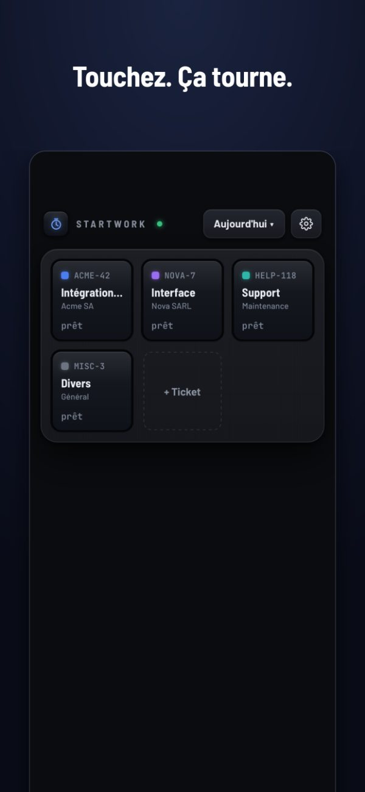
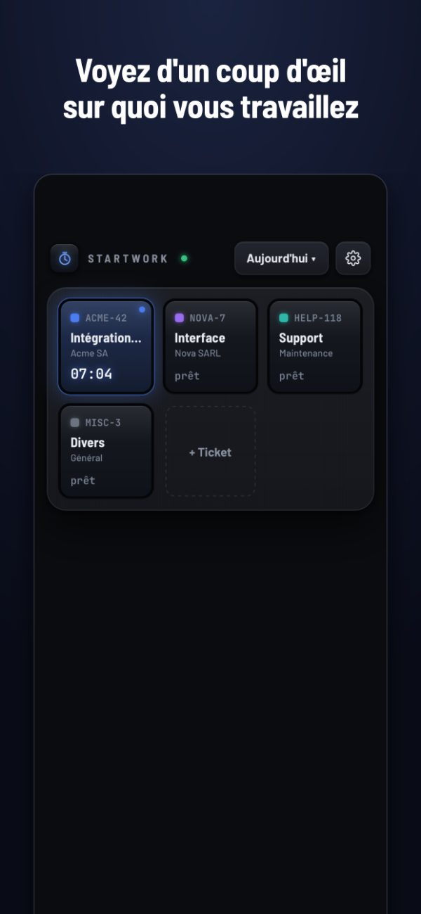
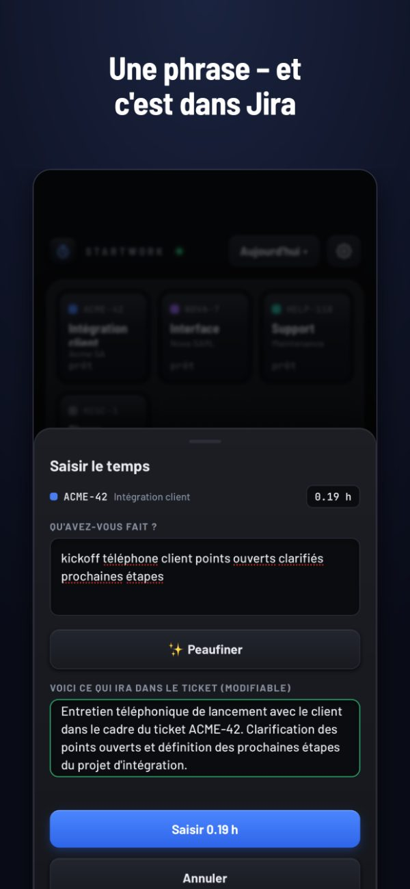
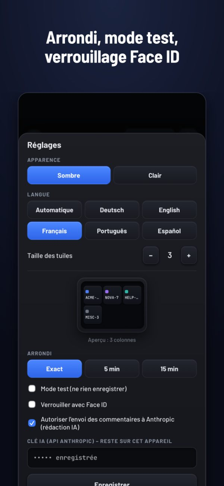

StartWork
Vos heures Jira, sans détour
Touchez une tuile – le chrono tourne. Touchez encore, décrivez en une phrase ce que vous avez fait – c’est dans Jira. Sans compte, sans cloud, rien à faire valider.
2,99 € · achat unique · sans abonnement · iPhone




Sans compte, sans cloud
StartWork fonctionne sur votre iPhone. Pas de serveur à nous, pas d’inscription. Votre temps va directement dans votre propre Jira – nulle part ailleurs.
Un seul achat
Un achat. Pas d’abonnement, pas de publicité, pas de collecte de données, pas de frais ultérieurs.
Pour ceux qui facturent à l’heure
Consultants, freelances, agences : saisissez au moment où vous changez de tâche, pas de mémoire le vendredi.
Ce qu’elle fait
- Des tuiles pour vos tickets habituels, titre récupéré dans Jira
- Ajout de tickets par clé ou en collant un lien Jira
- Arrondi à 5 ou 15 minutes, si votre entreprise le souhaite
- Mode test : voir ce qui serait saisi avant de saisir pour de vrai
- Notification pendant qu’un chrono tourne, pour ne pas l’oublier
- Verrouillage Face ID – un jeton Jira est stocké sur l’appareil
- Rapport du jour à partager, et les jours précédents pour le point
- En option : peaufiner les commentaires pour le client avec l’IA, avec votre propre clé Anthropic et uniquement après consentement explicite
Avant d’acheter
StartWork nécessite une instance Jira à laquelle vous pouvez vous connecter avec votre propre jeton. Jira Cloud, Server et Data Center sont pris en charge.
Le temps est saisi comme une saisie de temps Jira standard. Si votre entreprise utilise Tempo avec des champs obligatoires (« Work Attributes »), ils restent vides.
Questions
Comment saisir du temps dans Jira depuis mon iPhone ?
Installez StartWork, indiquez une fois l’adresse de votre Jira et un jeton d’API, puis ajoutez vos tickets en tuiles. Touchez une tuile pour lancer le chrono, touchez encore pour l’arrêter, écrivez une phrase – StartWork l’enregistre comme saisie de temps sur le ticket.
Est-ce compatible avec Tempo ?
Oui. StartWork écrit des saisies de temps Jira standard, que Tempo lit. Les champs Tempo obligatoires (« Work Attributes ») ne sont pas remplis.
Quelles versions de Jira sont prises en charge ?
Jira Cloud (connexion par e-mail et jeton d’API) ainsi que Jira Server et Data Center (jeton d’accès personnel).
Que deviennent mes données ?
Elles restent sur votre iPhone et vont uniquement vers votre propre Jira. Pas de statistiques, pas de suivi, pas de compte chez nous.
Est-ce un abonnement ?
Non. Vous payez une seule fois dans l’App Store.